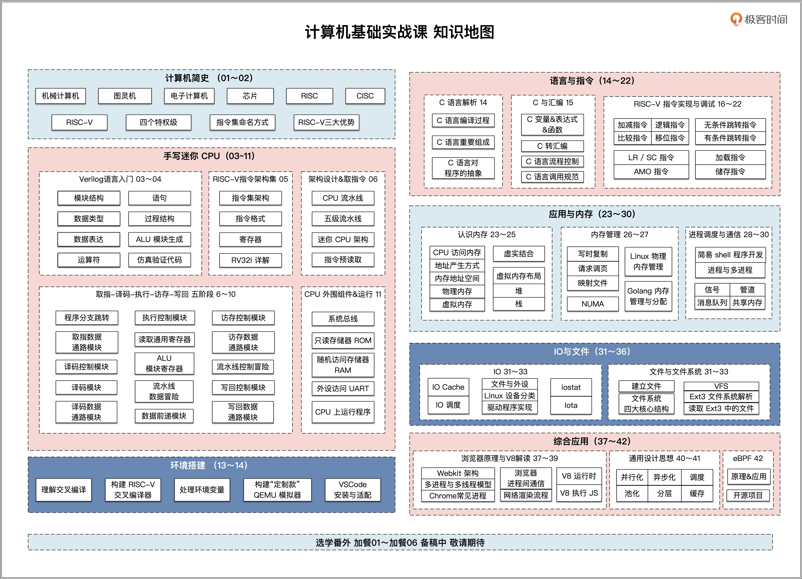

- 00 开篇词 练好基本功，优秀工程师成长第一步.md.html
- 01 CISC & RISC：从何而来，何至于此.md.html
- 02 RISC特性与发展：RISC-V凭什么成为“半导体行业的Linux”？.md.html
- 03 硬件语言筑基（一）：从硬件语言开启手写CPU之旅.md.html
- 04 硬件语言筑基（二）_ 代码是怎么生成具体电路的？.md.html
- 05 指令架构：RISC-V在CPU设计上到底有哪些优势？.md.html
- 06 手写CPU（一）：迷你CPU架构设计与取指令实现.md.html
- 07 手写CPU（二）：如何实现指令译码模块？.md.html
- 08 手写CPU（三）：如何实现指令执行模块？.md.html
- 09 手写CPU（四）：如何实现CPU流水线的访存阶段？.md.html
- 10 手写CPU（五）：CPU流水线的写回模块如何实现？.md.html
- 11 手写CPU（六）：如何让我们的CPU跑起来？.md.html
- 12 QEMU：支持RISC-V的QEMU如何构建？.md.html
- 13 小试牛刀：跑通RISC-V平台的Hello World程序.md.html
- 14 走进C语言：高级语言怎样抽象执行逻辑？.md.html
- 15 C与汇编：揭秘C语言编译器的“搬砖”日常.md.html
- 16 RISC-V指令精讲（一）：算术指令实现与调试.md.html
- 17 RISC-V指令精讲（二）：算术指令实现与调试.md.html
- 18 RISC-V指令精讲（三）：跳转指令实现与调试.md.html
- 19 RISC-V指令精讲（四）：跳转指令实现与调试.md.html
- 20 RISC-V指令精讲（五）：原子指令实现与调试.md.html
- 21 RISC-V指令精讲（六）：加载指令实现与调试.md.html
- 22 RISC-V指令精讲（七）：访存指令实现与调试.md.html
- 23 内存地址空间：程序中地址的三种产生方式.md.html
- 24 虚实结合：虚拟内存和物理内存.md.html
- 25 堆&栈：堆与栈的区别和应用.md.html
- 26 延迟分配：提高内存利用率的三种机制.md.html
- 27 应用内存管理：Linux的应用与内存管理.md.html
- 28 进程调度：应用为什么能并行执行？.md.html
- 29 应用间通信（一）：详解Linux进程IPC.md.html
- 30 应用间通信（二）：详解Linux进程IPC.md.html
- 31 外设通信：IO Cache与IO调度.md.html
- 32 IO管理：Linux如何管理多个外设？.md.html
- 33 lotop与lostat命令：聊聊命令背后的故事与工作原理.md.html
- 34 文件仓库：初识文件与文件系统.md.html
- 35 Linux文件系统（一）：Linux如何存放文件？.md.html
- 36 Linux文件系统（二）：Linux如何存放文件？.md.html
- 37 浏览器原理（一）：浏览器为什么要用多进程模型？.md.html
- 38 浏览器原理（二）：浏览器进程通信与网络渲染详解.md.html
- 39 源码解读：V8 执行 JS 代码的全过程.md.html
- 40 内功心法（一）：内核和后端通用的设计思想有哪些？.md.html
- 41 内功心法（二）：内核和后端通用的设计思想有哪些？.md.html
- 42 性能调优：性能调优工具eBPF和调优方法.md.html
- 先睹为快：迷你CPU项目效果演示.md.html
- 加餐01 云计算基础：自己动手搭建一款IAAS虚拟化平台.md.html
- 加餐02 学习攻略（一）：大数据&云计算，究竟怎么学？.md.html
- 加餐03 学习攻略（二）：大数据&云计算，究竟怎么学？.md.html
- 加餐04 谈谈容器云与和CaaS平台.md.html
- 加餐05 分布式微服务与智能SaaS.md.html
- 国庆策划01 知识挑战赛：检验一下学习成果吧！.md.html
- 国庆策划02 来自课代表的学习锦囊.md.html
- 国庆策划03 揭秘代码优化操作和栈保护机制.md.html
- 温故知新 思考题参考答案（一）.md.html
- 用户故事 我是怎样学习Verilog的？.md.html
- 结束语 心若有所向往，何惧道阻且长.md.html
- 捐赠
结束语 心若有所向往，何惧道阻且长
你好，我是LMOS。
首先恭喜你学完了这门课！在过去的四个多月里，我们从芯片到语言、从内存到应用、从IO到网络，由上而下地掌握了计算机各个领域的基础核心知识。
你可能会好奇，为什么我会做这样一门课？其实在此之前，我还有一门《[操作系统实战45讲]》，主题是如何实现一个五脏俱全的小型操作系统。我曾经以为这门课的深晦会让它石沉大海，但却出乎意料的异常火爆。
这让我看到了同学们对操作系统的热爱，但也从很多留言里发现了一个更严重的问题——很多同学的计算机基础不扎实。
我觉得这也是大环境所致，什么有用学什么、什么来钱用什么、什么能快速产出用什么，这会抽象提炼出一个大大的功利主义。
比如用Java能高速构建各种网络系统，因为Java本质上就是提供了各种类和组件。你用这些组件能快速出活，自然不用了解其内部的实现和对底层的依赖，美其名日“站在巨人的肩膀上”。效率提升了，但同时也导致我们对巨人的成长过程不闻不问。殊不知巨人倒下之后，我们将无所适从，就算巨人只是生个病（发生漏洞）带来的损失也不可估量。
于是我萌生了写计算机基础课程的想法。操作系统是我心中之光，我是乐此不疲的追光者，在我眼中，就算是复杂精密的操作系统，经过一层层分割、拆解，最基础的也是这门课里你学到的内容。

简单而无用？
不知道你学起来的感受是怎样的？从留言区和课程群的各种评论和反馈来看，这门课学起来还是相对轻松的，单独拎出某个知识点来看，甚至显得简单且无趣。所以你学的时候也许会疑惑，这么简单的知识，究竟有用么？
“1+1” 简单吗？简单。有用吗？单独存在时好像也没有用，但是它却是数理基础。同样地，计算机基础电路晶体管简单吗？简单，而且单独存在时，作用也非常有限。
在我看来，基础性的东西，共性就是简单，如此才能形成一个个知识点，便于我们“存储”到大脑中形成记忆。
以应用开发环节为例，开发一个大型应用的时候，我们都会把应用的功能拆开，形成一个个功能模块，这些功能模块彼此独立，模块之间有共同调用的函数库。模块中还会继续划分成一个个类，类中还会进一步拆分出多个函数。
当我们把视线聚焦到这些具体函数时，你会发现这些函数就会用上我们所讲的基础性知识，大到建立进程、操作读写设备、文件与网络，小到内存复制、处理字符串，这些“基本动作”是不是很眼熟？
没错，这些就是基础。而这些基础之下还有更基础的东西，层层下推，无外乎就是IO、编程语言与内存，最终落到物理芯片这一层。看似无用的基础，它们堆叠、扩展、相互协作，就能形成功能强大的产品。
“道生一，一生二，二生三，三生万物”，这句话老子在两千多年前就说过。其实越是简单的基础，越能扩展出世间万物，任何领域的基础性知识都是这样的。
所以对计算机基础知识来说，我们第一步要做的就是广泛吸纳知识，各种基础知识点照单全收，不要管有什么用，收入大脑存起来，就像给自己不停增加各种不同的库函数，这样就做到了“博闻”。
学以致用
为了摆脱“一学就会，一用就废”的怪圈，把这些零散的基础知识“长久存储”，融会贯通，还需要经历一个重要环节——学以致用。
只有把知识真正用起来，进入“运行时”，才算真正激活了它们。比如你想用代码读写文件，立马就联想到open、close、read、write等函数，想操作网络，你立马就能想到套接字接口。这一切是基于你长期运用这些函数的结果。
这一点感悟来自我的亲身体会。在自学计算机的道路上，我同样磕磕绊绊，但因为好奇心和兴趣的驱动，脚步虽慢，却未曾停止。
在看过了很多书籍资料之后，我开始尝试把自己的想法用代码实现出来，在真正的计算机上验证一下。在动手实验的过程里，我才遇到了许多先前只看理论时根本无法想到的问题，技术水平也迅速提升。
纸上得来终觉浅，绝知此事要躬行。你学会了一种知识，然后将其运用在工作中，感受是不一样的。在这个过程中你会不断对各种知识进行强化，从而加深理解，深入思考背后的理论原理，到一定的程度你就会“悟”，会有一种豁然开朗的感觉，那就是了解真理的感觉，那就是认知升级的时刻。
一旦认知升级，你脑中的机制，自然就会对已经清楚的知识进行打包，思维体系会继续向上一层，追求新的高度。当你日复一日，年复一年的坚持学而用之，认知体系就会自动的一次又一次的迭代升级，随着每次认知体系的升级，都会增强我们的自信心，提升我们的工作能力。
当我们知识越来越多，也就越来越接近山顶了。这时，你会真正地体会到“会当凌绝顶，一览众山小”的感觉，悄无声息地步入了高手行列。
到这里，真的要和你说再见了。虽然课程结束了，但是这些内容会持续存在，你可以时不时地复习一下。如果你遇见了什么问题，也欢迎继续给我留言。
学习是一辈子的事情，千万别停止学习。道阻且长，行则将至。知行合一，未来可期！
最后，我很想知道你学习这个专栏的感受。这里我为你准备了一份毕业问卷，题目不多，希望你可以花两分钟填一下。
© 2019 - 2023 Liangliang Lee. Powered by gin and hexo-theme-book.